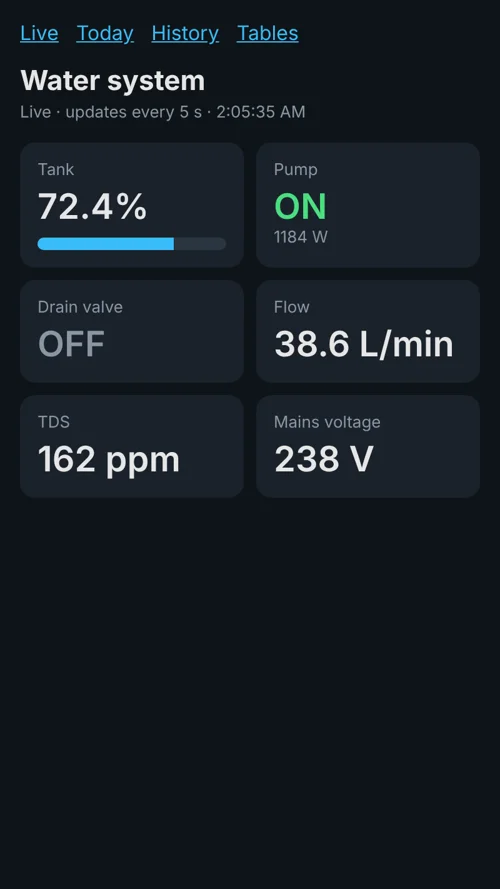
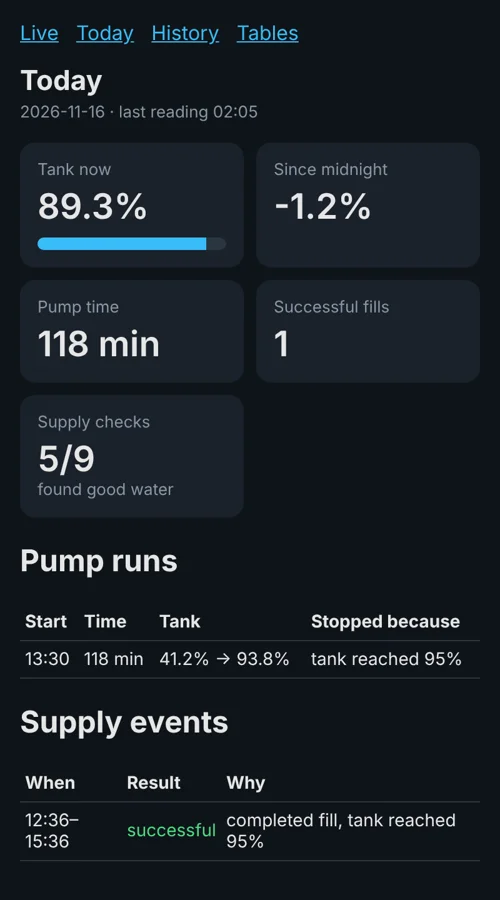
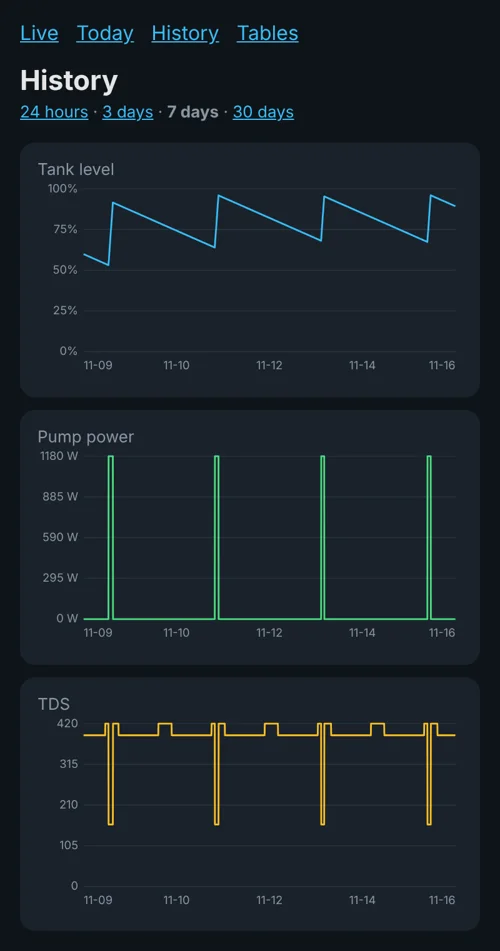

Deepesh Tickoo
Backend & Systems Engineer, Noida / Delhi NCR. I build and look after backend services and the Linux servers they run on.
Download CV (PDF)
About
I've worked in IT since 2011, from Android firmware and desktop support to server uptime, security compliance and web backends.
Today I design and run event-driven services on self-hosted Linux: state machines, REST and webhook integrations, SQL data layers, monitoring and alerts, plus LLM routing and MCP tool access. When something breaks I start from the logs and data, and I keep looking after what I build once it's running.
I'm looking for roles in IT services and service delivery: infrastructure, backend and support engineering, building and looking after systems for clients. The tools under Toolbox are ones I've set up and use myself, and I'm happy to show how.
Skills
- Languages & runtimesJavaScript (Node.js, Express, Node-RED), SQL, Bash, C++ (ESP32 firmware), YAML
- APIs & protocolsREST, Webhooks, WebSocket, MQTT, Telegram Bot API, SMTP, RTSP, MCP, OpenAI-compatible LLM APIs
- Databases & storageSQLite (schema design, retention), SQL injection hardening, ZFS / TrueNAS
- DevOps, OS & networkingLinux, TrueNAS SCALE, KVM VMs, Docker, Docker Compose, network bridges, DHCP reservations, Cloudflare Tunnel, Tailscale, Git / GitHub, GitHub Actions (CI)
- Monitoring & observabilityPrometheus, Grafana, Loki, Grafana Alloy, node-exporter
- AI & automationNode-RED, Home Assistant, LLM gateways (FreeLLMAPI), Ollama, Open WebUI
Experience
Built and run a live, automatic water supply controller with a SQLite event store, Telegram bot and email reports, plus a tested Node.js/Express API for it with GitHub Actions CI. Operate a TrueNAS server with a Home Assistant VM, Docker apps and a multi-provider LLM gateway behind Cloudflare Tunnel, monitored with Prometheus, Grafana and Loki.
Restored the company website and servers after an outage by redeploying a clean codebase, and fixed SQL injection issues in the database layer.
Managed backend server uptime and upgraded servers to the security compliance standards of the time.
Tested Micromax Canvas Android builds and ported modem and GPS libraries across firmware versions for devices sold in other regions.
Selected Projects
Event-driven controller for an unreliable alternate-day municipal supply. Checks for water every 5 minutes, judges flow and quality, runs the pump with safety cut-offs, and logs everything to SQLite. Built on Node-RED, Home Assistant and ESP32.
A read-only REST API and mobile dashboard for the water system, built with Node.js 22 and Express and packaged as a Docker container running as a Home Assistant app. Serves live sensor states from the Home Assistant API, a daily summary and history charts (server-drawn SVG) from the controller's SQLite database, with optional Basic auth and code that reloads without rebuilding the image. Tests and a Docker build run in GitHub Actions on each change.



Live, Today and History pages (sample data).
A TrueNAS SCALE server running a Home Assistant VM and Docker apps, with remote access through Cloudflare Tunnel. One multi-provider LLM gateway (FreeLLMAPI) serves Home Assistant Assist, a Telegram bot and Open WebUI with a single API key, so the AI provider can be changed without touching the apps that use it. A monitoring stack runs alongside as one Docker Compose app: Prometheus collects server and Home Assistant metrics, Grafana Alloy sends container and host logs to Loki, and a Grafana dashboard shows the water system. Mosquitto provides an MQTT broker with password login.
A library book-record management app built in C# / .NET (Visual Studio solution), with in-memory data storage.
View Project →Toolbox
Tools widely used in industry that I've set up and use in my own setup, with a line on what each one does there.
Apps run as containers; the monitoring stack is a single Compose file kept in Git.
Tests and a Docker image build run on every change to the Water API.
Collects server and Home Assistant metrics every 30 seconds, kept for 90 days.
Server health and a live water-system dashboard, stored as JSON in the repo.
Container and host logs collected into one searchable place.
Broker with password login, for devices that should keep working while Home Assistant restarts.
HTTPS access to internal services with no open ports on the router.
WireGuard-based VPN for remote admin access.
Hosts the apps, the Home Assistant VM and data on ZFS with snapshots.
Home Assistant OS runs as a VM next to the container workloads.
Runs the water system controller, a Telegram bot and email reports.
Event store for the controller: readings, pump runs, events and daily summaries.
REST API and dashboard with login, tests and a container build.
Self-hosted file sync and photo library.
One API key for several model providers, used by Home Assistant, a bot and Open WebUI.
Education
Vanier College, Montréal, Canada (2021 - 2023)
K.R. Mangalam University, Gurugram, India (2014 - 2017)
Contact
- Email: dpshtiko@gmail.com
- LinkedIn: linkedin.com/in/deepeshtickoo
- GitHub: github.com/deepeshtickoo